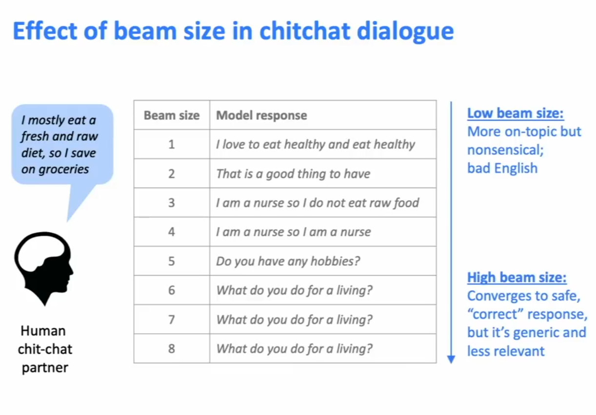
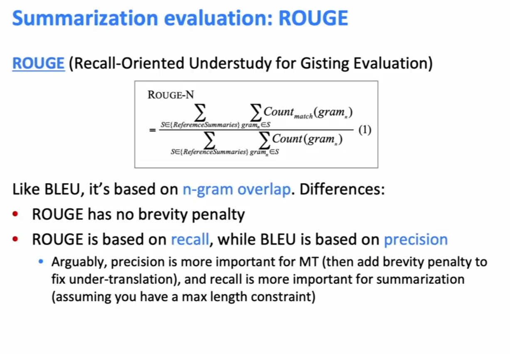
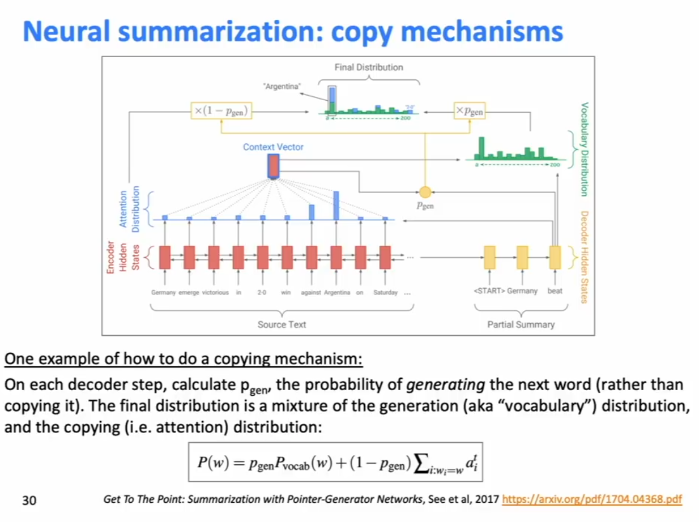
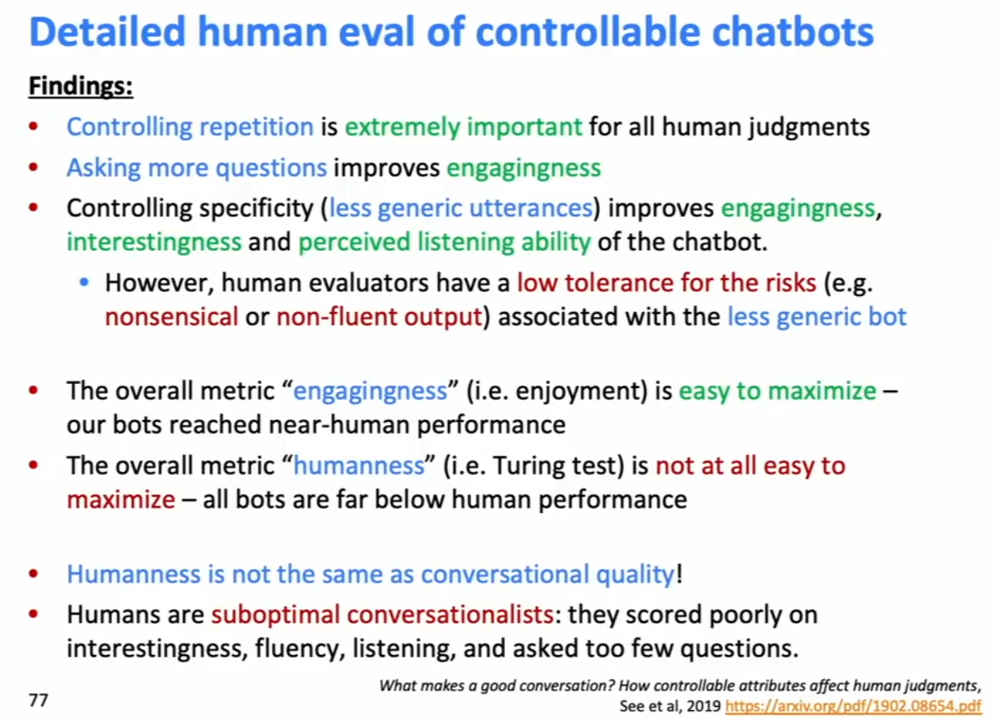

Decoding Algorithms
- Greedy Decoding
- Beam Search
What’s the effect of changing beam size k?
- Small k has similar problems to greedy decoding - incorrect output
- Larger k considers more hypothesis. This could be potentially expensive.
- In NMT, increasing k too much decreases BLEU score, becasue large-k beam search produces too short translations!
- In open-ended tasks like chit-chat dialogue, large k can make ourput more generic.

Sampling-based decoding
Sampling-based decoding is more efficient than beam search becasue there are no multiple hypotheses to track at each step.
Pure sampling
- On each step t, randomly sample from the probability ditribution P_t to obtain your next word. Like greedy but sample instead of argmax.
Top-n sampling
- On each step t, randomly sample from P_t, restricted to jsut the top-n most probable words. Like pure sampling, but truncate the proabbility distribution.
- n=1 is greedy search, n=V is pure sampling
- Increase n to get more diverse/risky output
- Decrease n to get more generic/safe output.
Summary of NLG Tasks and Neural Approaches
Summarization
Task: Given input text x, write a summary y which is shorter and contains the main information of x.
Summarization can be single-document or multi-document.
- Single-document means we write a summary y of a single document x.
- Multi-document means we write a summary y of multiple documents x1,…,xn. Typically these documents have overlapping content.
WIthin single-document summarization, there are datasets with source documetns of different lengths and styles:
- Gigaword: Task: first two sentences of a news article -> headline. (aka sentence compression)
- LCSTS (Chinese Microblogging): Paragraph -> Sentence Summary
- NYT/CNN/DailyMail: News Article -> (multi)sentence summary
Sentence simplifcation is a different but related task: Rewrite the source text in a simpler (sometimes shorter) way.
- Simple Wikipedia: standard Wikipedia sentence-> simple version
- Newsela: News article -> version written for children
Two main strategies for summarisation:
- Extractive summarisation: Select parts (typically sentences) of the original text to form a summary.
- Abstractive sumamrization: Generate new text using NLP generation techniques. More difficult, more flexibe (more human).
Pre-neural summarization:
Pre-neural summarization systems were mostly extractive. They typically had a pipeline as follows:
- Content selection: choose some sentences to include
- Used sentence scoring function based on features, topic keywords, tfidf, also location in the document
- Graph based algo
- Information ordering: Choose an ordering of those sentences
- Sentence realization: Edit the sequence of sentences (simplify, remove parts, fix continuity issues).
ROUGE: Main metric for summarization
Like BLEU, it’s based on n-gram overlap, but iwthout brevity penalty, and ROUGE is based on recall while BLEU is based on precision. (Precision is more important for machine translation, but recall is more important for summarization).
However (confusingly) often an F1 version of ROUGE is reported anyway.
ROUGE computation:
ROUGE scores are repoted separaly for each n-gram. The most commonly reported ROUGE scores are ROUGE-1, ROUGE-2, and ROUGE-L: longest common subsequence overlap.

Neural Approaches to Summarization
2015: Rush et al publish the first saeq2seq summarization paper. Single document abstractive sumamrization is a translation task! So standard seq2seq+attention NMT was used.
Other ideas
1. Make it easier to copy. But don’t copy too much!
- Hierarchical / multi-level attention
- More global / high-level content selection
- Use reinforcement learning to directly maximize ROUGE, or other discreate goals (e.g. length)
- Resurrecting pre-neural ideas such as graph algorithms for content selection adn putting them into neural systems.
Copying Mechanisms:
Seq2seq + attention systems are good at writing fluent output, but are bad at copying over details (like rare words) correctly.
Copy mechanisms use attention to enable a seq2seq system to easily copy words and phrases from the input to the output.
- Clearly very useful for summarization
- Allowing both copying and generating gives us a hybrid extractive/abstractive approach.
- Basically use attention to attend to the thing to copy
Several papers proposing copy mechanism variants:
- Language as a Latent Variable, Miao et al 2016
- Abstractive Text Summarization using Sequence-to-Sequence … Nallapati et al 2016
- Incorporating Copying Mechanism in Sequence-to-Sequence Learning, Gu et al 2016.

Problems with copying mechanism: They copy too much, and so what should be an abstractive system collapses to a mostly extractive system.
Also: They’re bad at overall content selection, especially if the input document is long.
Bottom up Summarization
Recall: Pre-neural summarization had separate stages for content selection and text generation. In seq2seq attention summarization, these two stages are mixed together. On each step of the decoder, we do word-level content selection (attention). This is bad: no global content selection strategy. Bottom Up Summarization as a way to solve this.
Bottom Up Summarization:
Two stages:
Content selection stage: Use a neural sequence-tagging model to tag words as include or don’t-include
Bottom-up attention stage: The seq2seq+attention system can’t attend to words tagged don’t-include (apply a mask)
Bottom up Summarization is simple but effective!
- Better overall content selection strategy
- Less copying of long sequences (i.e. more abstractive output)
Neural Summarization via Reinforcement Learning to directly maximize ROUGE-L
Interesting finding: Using RL instead of ML achieve higher ROUGE scores, but lower human judgement scores - “barely readable summaries”.
However, a combined objective which is a mix of old fashioned langage model (optimizing for perplexity), and optimizing directly for ROUGE gets better human judgement scores than just the old fashioned langauge model alone.
Dialogue Systems
Task-oriented Dialogue
- Assistive (Customer Service, QA etc)
- Cooperative (two agents solve a task together through dialogue)
- Adversarial (two agents content a task through dialogue)
Social Dialogue
- Chit-chat dialogue
Pre-DL, the difficulty of open-ended freeform NLG, pre-neural dialgoue systems usually used predefined templates.
As in summarization research, since 2015 there have been many papers applying seq2seq to dialogue.
Esp:
A Neural Conversational Model, Vinyals et al 2015,
Neural Responding Machine for Short-Text Conversation, Shang et al 2015.
It quickly became apparent that a naive application of standard seq2seq attention had pervasive deficienceies for chitchat dialogue
- Genericness
- Irrelevancy
- Repetition
- Not remembering conversation history.
- Lack of consistent persona
Irrelevant Response problem
Problem: seq2seq often generates response that’s unrelated to user’s utterance, wither becasie it’s generic (“I don’t know), or because changing the subject to somethign unrelated.
One solution: Optimize for Maximum Mutual Information (MMI) between input S and response T:
If T is high likelihood anyways it will get penalised, as follows:
Repitition Problem:
Simple Soution:
- Directly blcok repeating n-grams during beam search
- Usually pretty efective!
More complex solutions:
- Train a coverage mechanism - in seq2seq, this is an objective that prevents the atention mechanism from attending to the same words multiple times
- Define a training objective to discourage repetition
- However, teacher forcing tends to make this hard, because you are not feeding the output back in the model itself, thus making hte model not differentiable on the output. If this is a non-differentiable function of the generated output, then will need some technique like RL to train.
Storytelling
Most neural storytelling work uses some kind of prompt
- Generate a story-like paragraph given an image
- Generate a story given a brief writing prompt
- Generate the next sentence of a story, given the story so far (story continuation)
- This is different to the previous two, because we are not concerned with the system's performace over several generated sentences.
Generating Stories about Images, Skip-Thought Vectors
Question: How to get around lack of parallel data?
Answer: Use a common sentence-encoding space.
- Skip-throught vectors are a type of general-purpose sentence embedding method.
- The idea is similar to how we learn an embedding for a word by trying to predict the words around it.
- Using COCO (an image captioning dataset), learn a mapping from images to the skip-thought encodings of their captions.
- Using the target style corpus (Taylor Swift Lyrics), train a RNN-LM to decode a skip-thought vector to the original text
- Put the two together.
Could be a good personal project to replicate!
Automatic Evaluation Metrics for NLG
Word-overlap based metrics: BLEU, ROUGE, METEOR, F1 etc are not ideal for translation, even worse for summarization, and even worse for dialogue, which is more open-ended than summarizaiton.
Word voerlap metrics are not a good fit for dialogue. Very little correlation between BLUE and human score.
Perplexity tells you how strong your langauge model is, but doesn’t tell you anything about generation (if your decoding algo is bad, perplexity is unaffected).
Word embedding based metrics to capture the similarity of the word embeddings - unfortuantely, does not correlate well with human jusgements for open-ended tasks liek dialogiue.
Generally, we define more focused automatic metrics to capture particular aspects of generated text:
- Fluency - Take a language model trained on text and generate probability with respect to that that language model.
- Correct stule - get probability with respect to a Langauge Model trained on target corpus
- Diversity - rare word usage, uniqueness of n-grams
- Relevance to input (semantic similarity measures)
- Simple thigns like length and repetition
- Task-specific metrics, e.g. compression rate for summarization
Though these don’t measure overall quality, they can help us track some important qualities that we care about.
Human Evaluation
Human jusgements are regarded as the gold standard, but are slow and expensive. But also,
Humans are inconsistent, can be illogical, lost concentration, misinterpret your question, etc

-